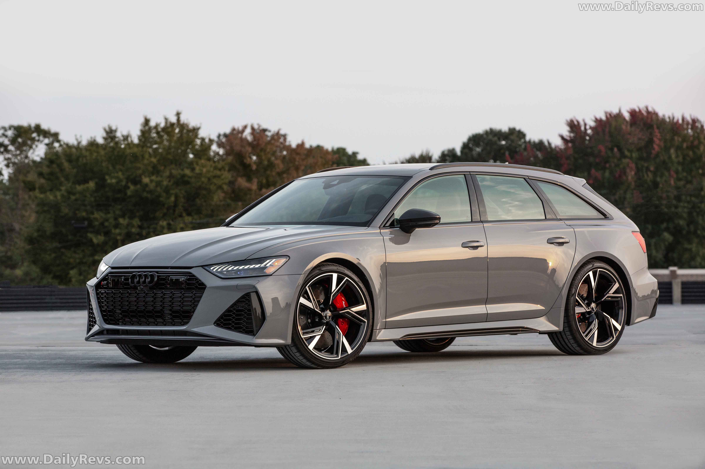

Главная Страница
Модели
Модель Audi RS6

Характеристики Audi RS6
Параметр
Значение
Марка
Audi
Модель
RS6 Avant
Двигатель
4.0 V8 TFSI Biturbo
Мощность
600 л.с.
Разгон 0–100 км/ч
3.6 секунды
Макс. скорость
250 км/ч (305 км/ч с пакетом Dynamic)
Привод
quattro (полный)
Коробка
8-ступенчатый автомат Tiptronic
Короткий видео обзор на модель RS6
Перейти на видео обзор